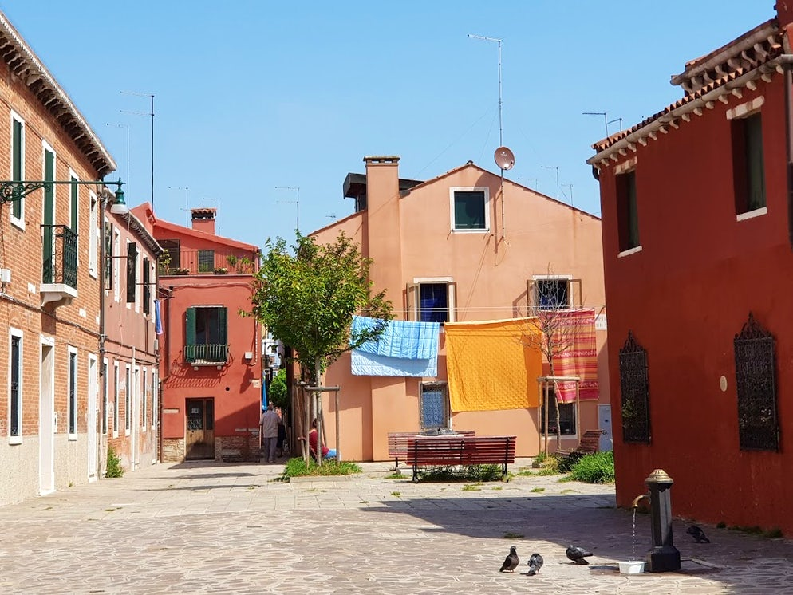
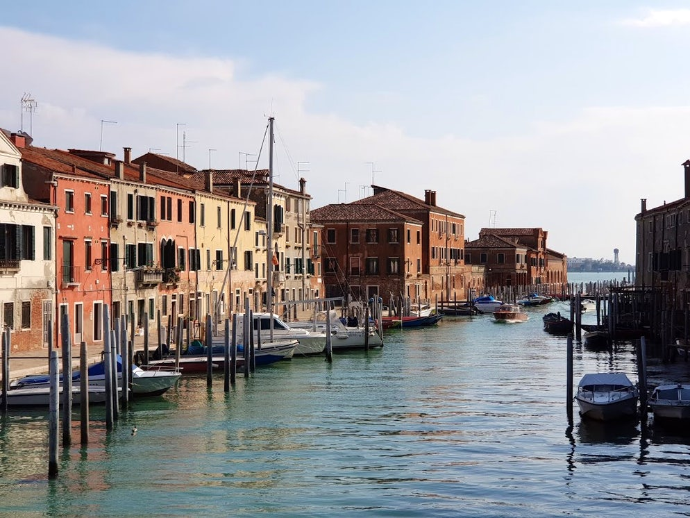

Die Insel Giudecca ist nur etwa 300 Meter von der Hauptinsel Venedig und nur wenig mehr vom berühmten Markusplatz entfernt. Dennoch kommen vergleichsweise wenig Touristen nach Giudecca. Es gibt auf dem Eiland keine weltberühmten Museen, Gebäude oder Galerien. Es ist eher eine Wohngegend der normalen Menschen in Venedig. Aber das macht Giudecca gerade interessant.Die Insel ist ein bisschen so wie Venedig, wenn es den Massentourismus nicht geben würde. Auto und sogar das Benutzen von Fahrräder sind verboten. Auf Giudecca gibt es noch normale, typisch italienische Pizzerias, Metzger, Bäcker und Friseure. Man hat von der Insel einen wunderbaren Blick aus San Marco mit dem Markusturm.
Die Insel Giudecca liegt in der Adria und verläuft nahezu parallel zur Hauptinsel. Lediglich der Canale della Giudecca trennt die Insel von der quirligen italienischen Stadt. Das Leben auf dem Eiland ist ziemlich ruhig und entschleunigt, denn die Benutzung von Autos und Fahrrädern ist untersagt. Auf Giudecca kann man den normalen italienischen Alltag erleben, denn es gibt typische Restaurants, Bäckereien und Metzger. In den erstklassigen Gaststätten der Insel kann man die regionalen Köstlichkeiten probieren und dabei auf die Altstadt von Venedig mit dem Markusplatz und dem Dogenpalast schauen. Somit erlebt man auf Giudecca das eigentliche Italien mit seinen ursprünglichen Traditionen.


Die bunten Fassaden sind das eine. Mindestens genauso bekannt ist Burano für seine wunderschönen Spitzenstickereien in der Reticella Technik, die Ende des 19. Jahrhundert durch die Spitzenschule, Scuola di Merletti, neu belebt wurde. Im Museo del Merletto kannst Du heute noch echte Burano-Spitzen bewundern. Die Läden in den Gassen Buranos verkaufen meist nicht die teure Burano-Spitze, sondern billige Ware aus Asien.
Etwa alle vier Minuten setzt ein Wasserbus, ein so genannter Vaporetto, nach Giudecca über. Es verkehren mehrere Vaporetti zwischen der Insel und Venedig und fahren verschiedene Haltestellen an, wobei es auf Giudecca drei davon gibt. Am besten steigt man beim ersten Halt aus, schaut sich die Insel zu Fuß an und fährt dann von der dritten Haltestelle aus wieder zurück nach Venedig. Obwohl historische Bauwerke und berühmte Museen im Gegensatz zur Venedig eher rar sind, kann Giudecca mit einigen Highlights aufwarten. Die wichtigste Sehenswürdigkeit ist die Kirche Il Redendore, die auch Erlöser-Kirche genannt wird, aus dem 16. Jahrhundert. Architekt dieses ausgewogenen Bauwerks war kein Geringerer als Andrea Palladio. In dem Sakralbau, der Gott als Dank für die Erlösung Venedigs von der Pest gewidmet wurde, sind ein paar tolle Gemälde zu bewundern. Im Westen von Giudecca kann man die Casa di Tri Oci im neugotischen Stil bewundern, in welcher regelmäßig Kunstausstellungen stattfinden. Ebenfalls sehenswert ist die daneben gelegene Chiesa Le Zitelle, die früher als Klosterschule für Mädchen genutzt wurde.